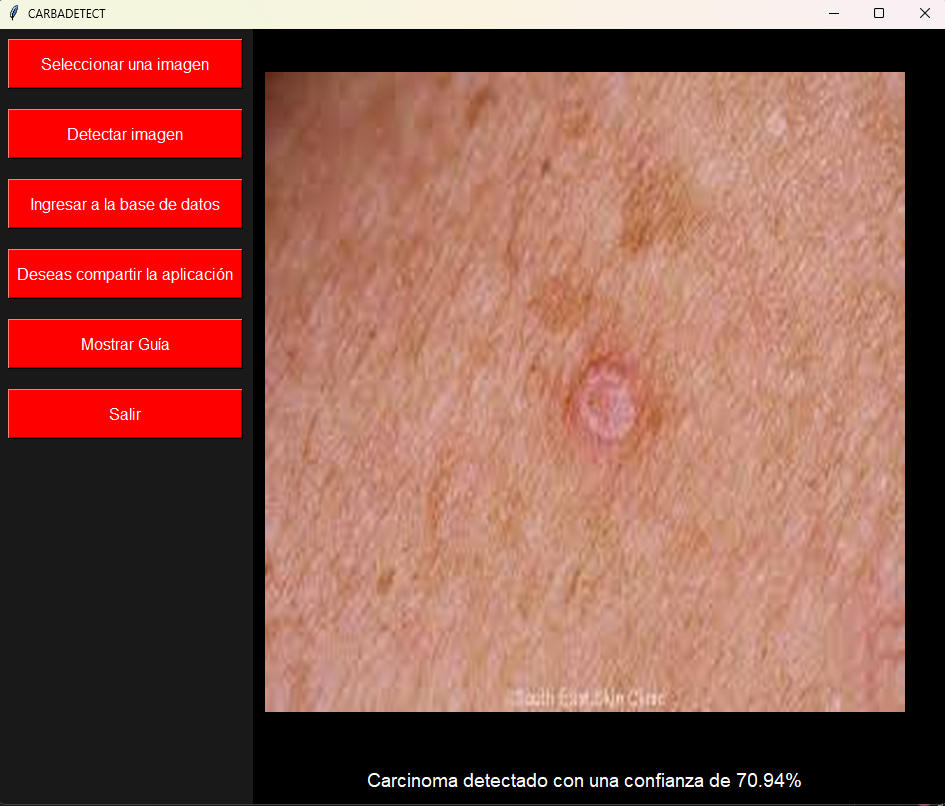
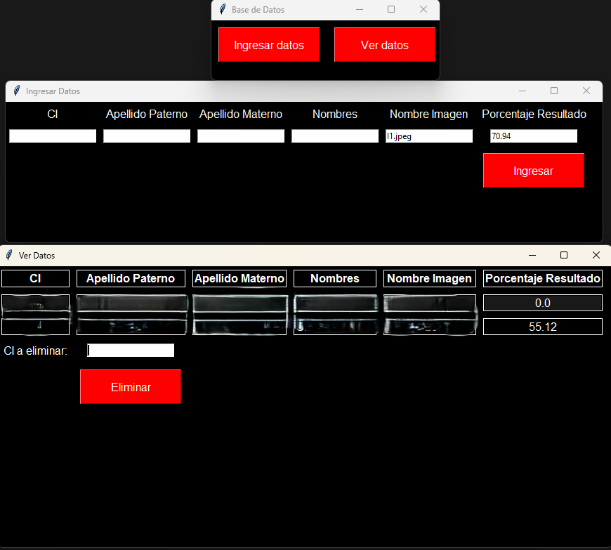

El carcinoma de células basales es el tipo más común de cáncer de piel y puede ser altamente destructivo si no se detecta y trata a tiempo. Afecta a millones de personas en todo el mundo y su incidencia sigue en aumento.
Nuestra aplicación utiliza tecnología avanzada para ayudar en la detección temprana, facilitando el diagnóstico y mejorando las posibilidades de un tratamiento exitoso. ¡Descarga la aplicación y protege tu salud hoy mismo!
↓
¡DESCÁRGALO YA!
↓

